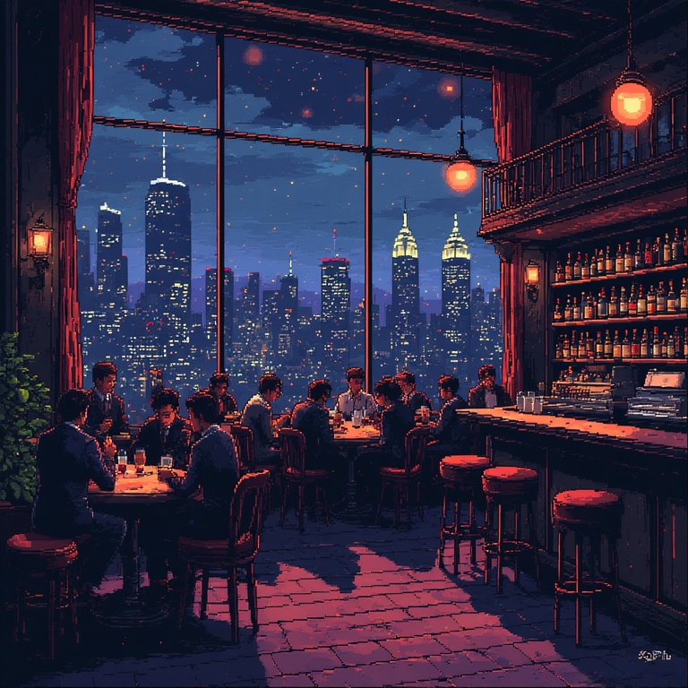

Crew with you 30+ days become veterans - each is worth +0.5 combat power, capped at +5 total.
GOT BURNED
CREW TROUBLE
CHOOSE YOUR APPROACH
GANG WAR
FOUND SOMETHING
DOWNTOWN
MOVE
AIM/FIRE
Downtown
Level 1 hideout generating $20/day
375750$560
= TURF WAR
Build hideouts in captured territories to generate income and power.
END OF DAY
ECONOMY
MILESTONE REACHED
REPORT
CITY MAP - OMNICORP GRID
YOURS HOSTILE ALLIED NEUTRAL
Tap a location to travel
MENU
NEW GAME
Wipe progress and start fresh
TUTORIAL
MANUAL
Tap a section to expand it
STREET CONFRONTATION
CREW: 6
HITS: 0
HP: 100%
TIME: 10.0s
Tap them fast - they'll shoot back if you're slow.
Location Name
Location description goes here...
DRUG MARKET
$0
CASH
0/10
HEAT
0/20
STORAGE
MEDIUM
CRIME LEVEL
15%
RIP-OFF RISK
Transaction history will appear here...
Market information will appear here...
~ THE SILVER SPOON ~

Soft amber lighting bathes the intimate space. A grand piano sits silent on the small stage. Well-dressed patrons speak in hushed tones over cocktails as smooth jazz drifts through the air.